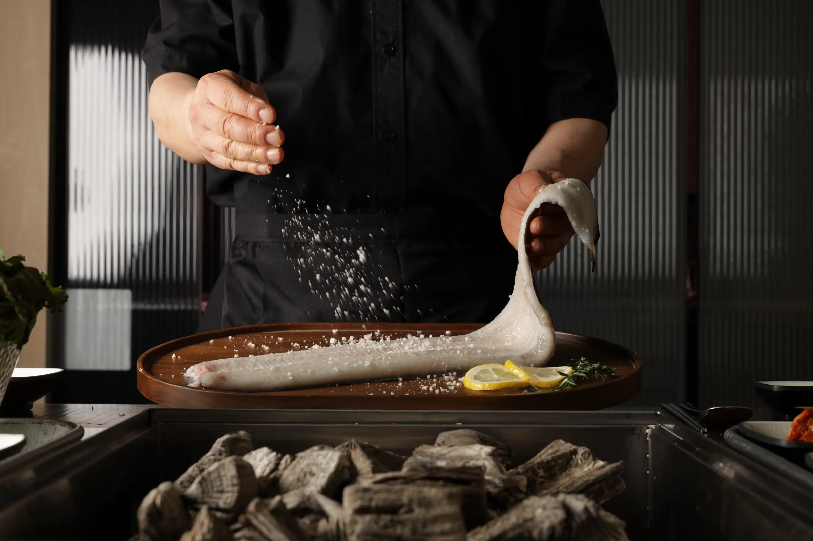
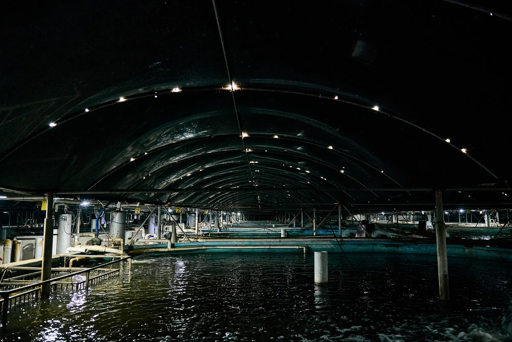
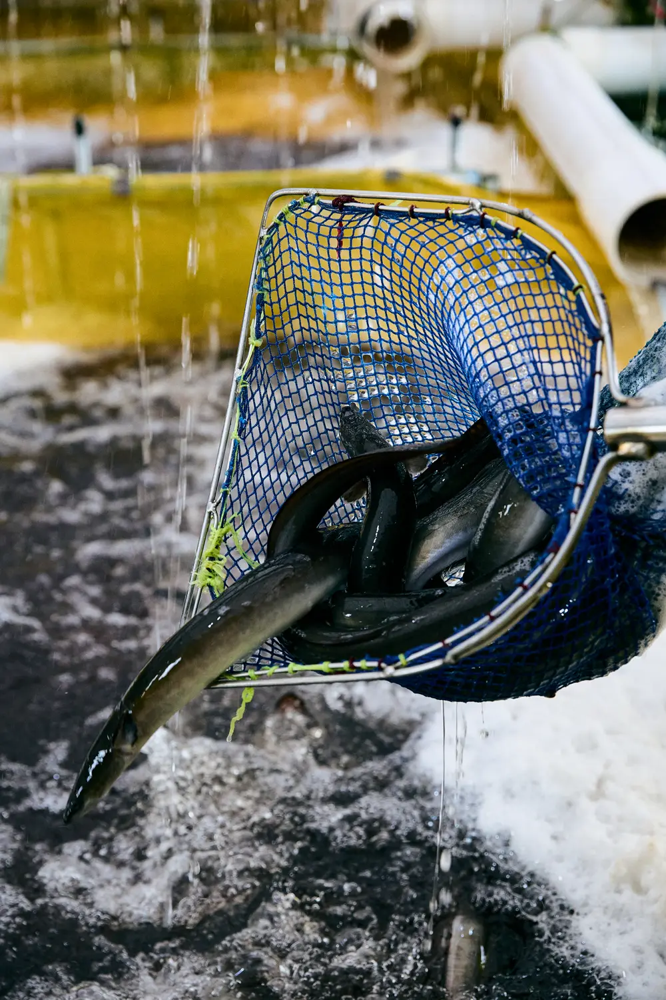
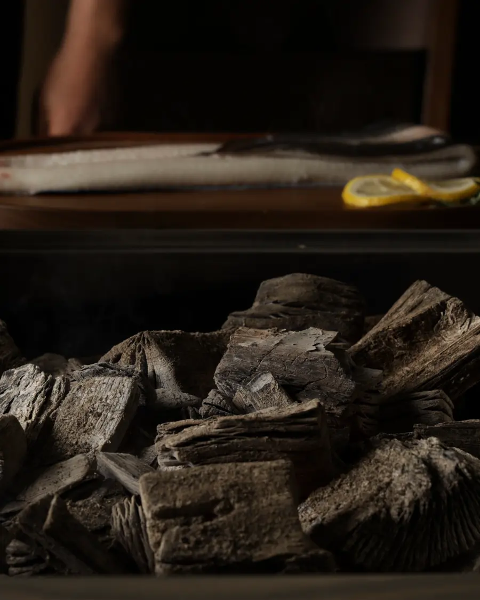
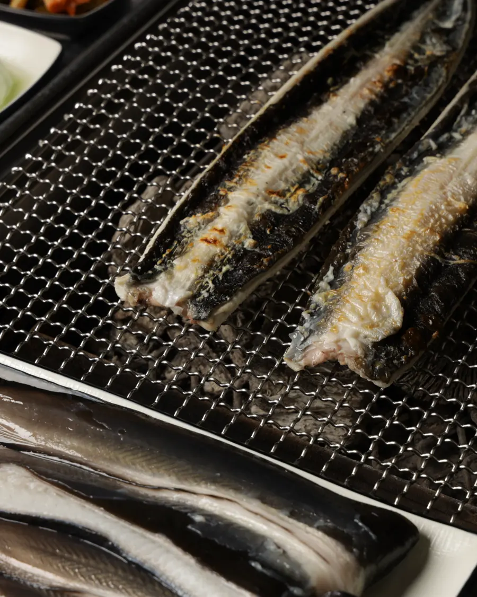
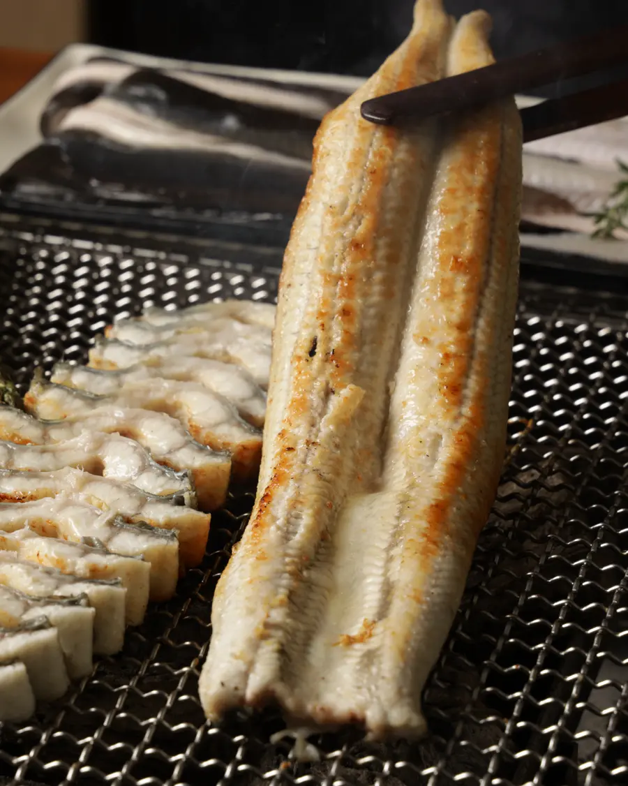
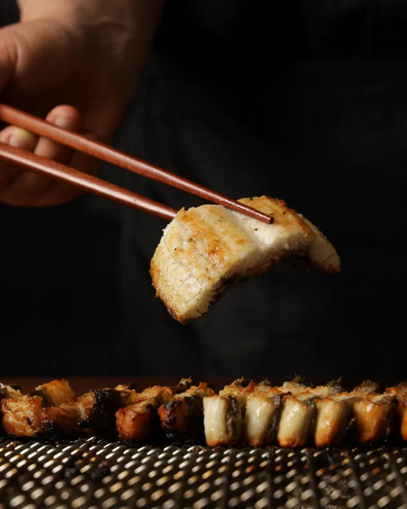

나주와 을왕리, 참숯 위에서 굽는 토종 민물장어
품장의 장어는 나주 삼원수산 양식장에서 옵니다. 2009년부터 장어를 길러 온 곳에서 토종 자포니카 장어를 받아, 참숯 위에서 소금 또는 양념으로 굽습니다.
좋은 장어를 고르는 일, 알맞게 굽는 일, 편히 머무를 자리를 한곳에 담았습니다.


삼원수산 민물장어는 자연 상태와 가장 가까운 환경에서 건강하고 안전하게 키웁니다.


참숯을 피웁니다

손질한 장어를 올립니다

껍질 쪽부터 천천히 익힙니다

뒤집어 살을 노릇하게 굽습니다

한입 크기로 잘라 냅니다


손질 장어와 초벌 장어를 장어구이 양념, 생강채와 함께 냉장 포장해 보내 드립니다. 양념은 순한맛과 매운맛 중에 고르실 수 있습니다.

손질 장어는 등부터, 초벌 장어는 뱃살부터 굽습니다.